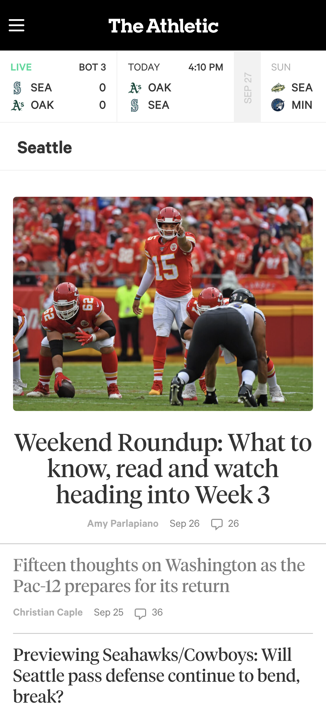

White Space & Clean Design
The Athletic
The Athletic's mobile homepage makes good use of photos and white space to create a clean, minimal design. Thin dark lines divide content without creating a loud, distracting feel as you browse.
Rule of Thirds
Boeing Employees Credit Union
BECU's mobile banking homepage gives us a great look at the Rule of Thirds. As you can see above, they've used multiple photos that place the subject off-centered as if the photo was divided into thirds.
Visual Hierarchy
Bank of America

Visual Hierarchy is about making the most important options of your website easy to find. Their goal is to get people to open an account and their large 'Get Started' button in blue at the top makes it easy.